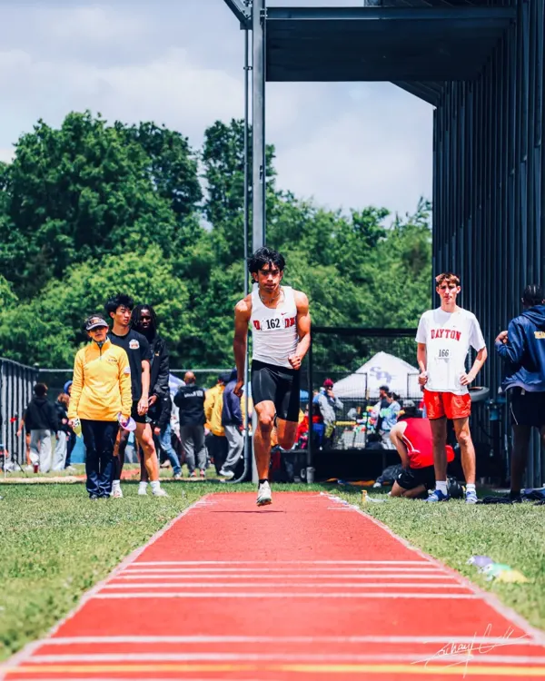

Outside Class
I follow Tottenham, the Broncos, the Nuggets, and the Yankees. I enjoy learning about history and geography, and I’m especially interested in politics and geopolitics.
Since moving to New York, I’ve been playing pickup basketball and pickleball. I love going out with friends, trying new food spots around the city, and taking late-night drives.
Something I’m thinking about
Following my teams and playing fantasy football gives me plenty of reasons to think about matchups and predict how games will go. I’d like to know whether that familiarity actually makes my predictions better, especially when I have a team I want to win.
That’s where the question “Does being a fan make me a better bettor?” comes from. I want to record predictions before games and compare how I do with teams I support versus teams I don’t. I’d track hypothetical bets to see whether knowing a team closely helps, or whether loyalty makes me too confident. It’s a project I’m planning, so I don’t have results yet.

